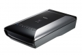

器材库 > 平板扫描仪 > CanoScan 9000F

该产品没有存档的规格参数
kettoo2011-04-07 02:534.75 分
操作性 5.00功能性 4.50美观性 5.00趣味性 5.00耐用性 4.50性价比 5.00解像力 4.50色彩还原 4.50
attackzhou2011-01-26 14:284.19 分
操作性 4.00功能性 4.50美观性 4.00趣味性 4.00耐用性 4.00性价比 5.00解像力 4.00色彩还原 4.00
siliconworm2010-10-21 09:47
siliconworm2010-10-21 09:43
siliconworm2010-10-21 09:38
siliconworm2010-10-21 09:33
siliconworm2010-10-21 09:30
siliconworm2010-10-21 09:26

siliconworm2010-10-21 09:23
siliconworm2010-10-21 09:21
该产品暂无存档的产品图